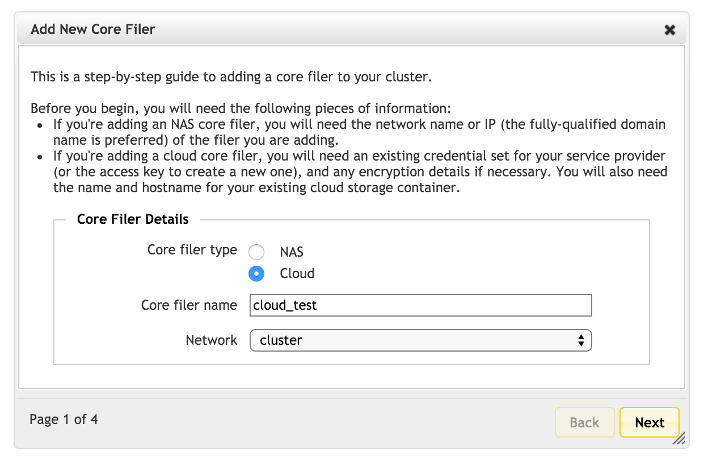
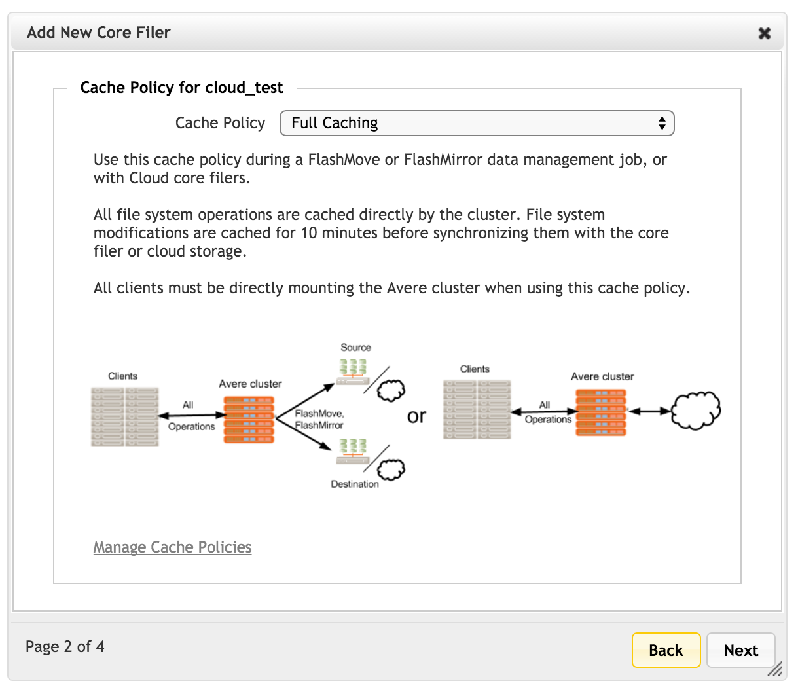
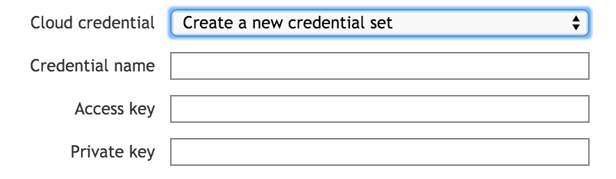
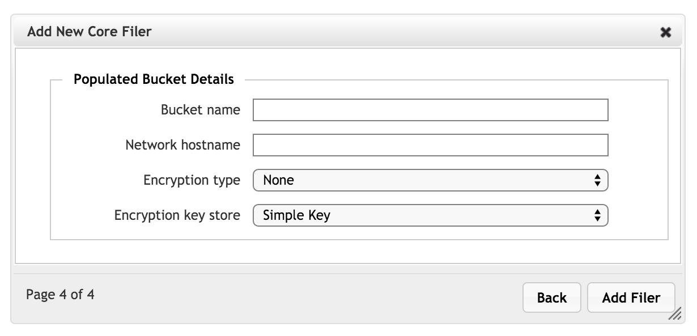
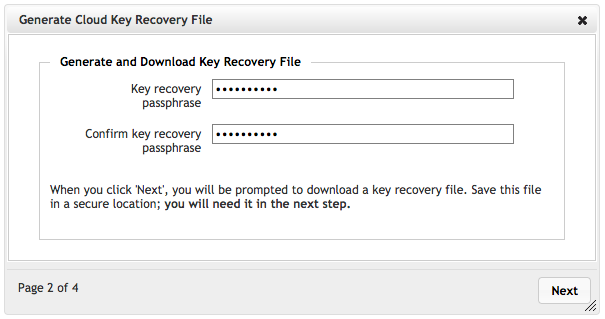
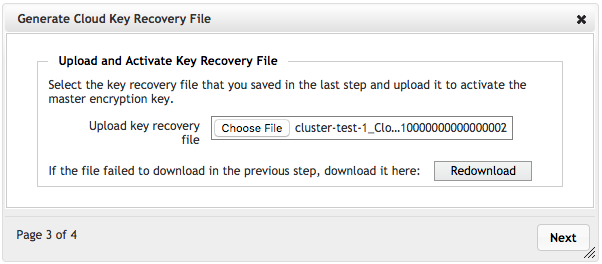

Adding a New Core Filer - Cloud Core Filer
This section walks through the process of adding a new core filer to your Avere cluster. This section is customized for core filers that use cloud storage on the back end; the process is different for a core filer that uses NAS storage. Read Adding a New Core Filer - NAS Core Filer for details.
Prerequisites for Adding a New Cloud Core Filer
Before starting to configure the cloud core filer on the cluster, make sure you have the following information.
- A valid and active license for FlashCloud on this cluster. Read Appendix A: Adding or Removing Feature Licenses for more information.
- An existing user credential for your cloud storage provider, or the access and private keys needed to add a cloud credential to the Avere cluster. Create this credential in your cloud system and copy the ID code and secret key. You can add the credential to the cluster in the Cluster > Cloud Credentials page before adding the core filer, or from within the Add New Core Filer wizard when defining a cloud core filer.
- The name of an existing cloud storage container. Read Using Cloud Storage As A Core Filer to learn more about instantiating a cloud core filer.
- Encryption details - whether or not to encrypt the core filer, and the type of key storage used. If using KMIP, you should have a key server set up before creating the core filer; read Configuring KMIP for an Avere cluster to learn how.
- If adding a cloud core filer on a vFXT cluster that is hosted on Amazon Web Services, you might need to update an IAM policy to make sure that your vFXT nodes will be permitted to access the new storage. Read Appendix H: Updating Cloud Storage Permissions for an AWS vFXT Cluster.
The Add New Core Filer wizard guides you through the steps to define a new storage entity for your cluster. Start the wizard by clicking the Create button from the Manage Core Filers page.
New Core Filer Wizard
Start the New Core Filer wizard by clicking Create on the Core Filer > Manage Core Filers settings page.
The options are different for each type of core filer - select Cloud to define a core filer that uses cloud storage.
{kind=link}
Fill in the required fields:
- Core filer name - Set the name for this core filer. Use a name that cluster administrators will understand; this value does not need to match the name of the actual storage container on the cloud provider.
- Network - If your cluster has more than one network, select the network that this core filer will use to communicate with the cluster.
Click Next to continue.
Caching Policy
{kind=link}
On the second page of the wizard, choose the caching policy for this core filer.
Read Manage Cache Policies to learn more about customizing cache settings.
Click Next to continue.
Cloud Service and Protocol

On the third page, specify details about the cloud storage service.
Service type - Select one of the cloud service types. These types are predefined in the Avere system; contact Avere Global Services if the provider or service type that you want is not listed.
Some options are preconfigured when you select a particular service. For example, selecting Cleversafe cloud storage automatically enables SSL (Use HTTPS) and specifies port 443.
Cloud Credential - From the next drop-down list, select an existing credential, or choose Create a new credential set to define a new one.
If you select the new credential option, additional fields appear so that you can specify the credential name, access key, and private key for the user account that the Avere cluster will use to access this core filer.
To learn more about these options, read Cluster > Cloud Credentials.
Bucket contents - Specify whether the cloud storage container is currently populated with Avere-managed files (that is, it was previously used as an Avere core filer) or if it is empty. Note that to reuse a container with Avere-managed files, you must use the same encryption setting and the same key that was previously used with this container.
You will enter more specific bucket information on the next page.
Note
Each cloud filer can be associated with only one bucket, and each bucket can be associated with only one cloud core filer. This means that:
- If you use an existing bucket, and choose Empty, you will no longer be able to access any information in that bucket. Core filer creation might fail if you choose an existing bucket that contains data.
- If you intend to create a new bucket, and choose Existing Avere data, you will later be asked for an encryption key to access the bucket. If you are trying to access a bucket that did not previously exist, you will not be able to access it (there will be no encryption key), and you will have to re-create the cloud filer.
Use nearline bucket (Google Cloud storage only) - This checkbox allows you to mark this cloud core filer as a Nearline Storage bucket. (Avere OS does not verify whether or not the cloud object is actually configured as a Nearline Storage bucket.)
Nearline storage is designed for archive use, and writing data to this type of bucket can incur data transfer fees.
Nearline storage is the only one of the three Google Cloud Storage classes (Standard, Durable Reduced Availability (DRA), and Nearline), that must be explicitly enabled. Be sure that you understand the cost implications of using a Nearline bucket as a core filer before you select this option.
Use HTTPS - Check this box to use the secure web protocol in communications between the cloud and the cluster.
Depending on the cloud service type, a Port field appears when HTTPS is selected. If your cloud provider does not use the standard SSL port, 443, enter the port or range of ports into the Port field. For some cloud services, the port is not configurable.
Separate port numbers or ranges with spaces - for example,
7070 7072-7074defines four ports: 7070, 7072, 7073, and 7074.Certificate verification - Specify the method to use to authenticate the SSL certificate provided by the cloud storage system.
- Select Disabled to trust all certificates.
- Choose OCSP to use the Online Certificate Status Protocol.
- Choose CRL to use Certificate Revocation Lists.
- Select OCSP_CRL to use CRL as a fallback method if OCSP verification fails. (This is the default value.)
{kind=link}
Compression mode - If you want to compress objects before they are written to the cloud core filer, select LZ4 compression.
You can change compression options at any time; objects written to this core filer are either compressed or uncompressed according to the setting at the time they are written.
Snapshot policy - Optionally, specify one of the existing cloud core filer snapshot policies. Create or modify snapshot policies on the Core Filer > Cloud Snapshot Policies page. You can add a snapshot policy later on the Core Filer > Core Filer Details page.
Proxy configuration - Optionally, select one of the cluster’s proxy server configurations to use when communicating with this core filer. Proxy server configurations are defined on the Cluster > Proxy Configuration page; you can add a proxy server to the core filer later on the Core Filer > Core Filer Details page.
Bucket Details
The fourth page of the Add New Core Filer wizard for cloud storage has settings for the storage container.
The options are different for populated storage and for empty storage, and different cloud services also show different options.
Configuring an Empty Bucket

Set these options for a bucket that has not previously been used for Avere storage.
Bucket name - Enter the name of the bucket that has been or will be created on the cloud provider’s network.
This name must match the actual bucket name on the cloud system.
Network hostname (some cloud providers only) - Enter the hostname or IP address of the endpoint that will be used to access this bucket. Avere Systems strongly recommends using the fully qualified domain name for the region-specific endpoint in this field.
Only certain cloud storage providers require this configuration. If this field does not appear, it is not required for the selected provider.
Encryption type - Choose an encryption algorithm (AES-256 is currently the only option) or choose None to leave the storage volume unencrypted.
Note
The encryption type cannot be changed later.
Encryption key store - Select the type of key storage used. You can choose a simple key file stored locally on the cluster, or select a KMIP server in the cluster. (KMIP servers are configured in the Cluster section; read Configuring KMIP for an Avere cluster to learn more.)
If you choose local storage (Simple Key), you will be prompted to create and download an encryption key after the core filer is created. Read Encryption Recovery Key and Passphrase, below, for details.
Configuring a Populated Bucket
{kind=link}
If you selected Existing Avere data in the Bucket contents setting, this page asks you to fill in the storage information.
Bucket name - Enter the name of the bucket on the cloud provider’s network.
Network hostname (some cloud providers only) - Enter the hostname or IP address of the endpoint that will be used to access this bucket. (For example: cloud-server-round-robin-dns.mycompany.com) Avere Systems strongly recommends using the fully qualified domain name for the region-specific endpoint in this field.
Only certain cloud storage providers require the network hostname; others determine the endpoint automatically. If this field does not appear, it is not required for the selected provider.
Encryption type - If the bucket contents were previously encrypted, you must select the same encryption type as before.
If the bucket was unencrypted, you can choose an encryption algorithm (AES-256 is currently the only option) or choose None to leave the storage volume unencrypted.
Encryption key store - Select the type of key storage used.
If the bucket contents were encrypted the last time it was used with an Avere cluster, this section will prompt you to upload the old encryption key, then create a new encryption key that incorporates the old key. (Uploading the old key happens before step one in the process described below in Encryption Recovery Key and Passphrase.)
You can choose a simple key file stored locally on the cluster, or select a KMIP server in the cluster. (KMIP servers are configured in the Cluster section; read Configuring KMIP for an Avere cluster to learn more.)
If you choose local storage (Simple Key), you will be prompted to create and download an encryption key after the core filer is created. Read Encryption Recovery Key and Passphrase, below, for details.
Saving Settings
When all of the settings are complete, click Add Filer to create the new cloud core filer. The Avere Control Panel dashboard might display warnings during the creation process, but the warnings should clear within a few minutes.
Encryption Recovery Key and Passphrase
If you chose to encrypt your cloud core filer and store the encryption key locally, additional wizard screens appear after the core filer is created. The core filer cannot be used until an encryption key and passphrase are created for the data on the core filer.
This passphrase and recovery key file are associated with encrypting your data on the cloud core filer. If you decommission this cluster and want to use the cloud bucket as a core filer for another Avere cluster, you will need these two items to allow the new cluster to decrypt the data stored there.
There are three steps to create and store the encryption recovery key:
- Generate the key on the Avere cluster by setting a passphrase.
- Download the key file to a local system.
- Upload the key file to the cluster.
These settings also can be made or changed on the Core Filer > Cloud Encryption Settings page.
Generate and Download the Key
The first screen asks you to enter a passphrase. Avere OS will create an encryption key associated with the passphrase.
{kind=link}
A passphrase is different from a password because it can contain spaces, symbols, and punctuation in addition to uppercase and lowercase letters. It must be fewer than 50 characters. Make sure that you can remember the passphrase for future use, or store it securely.
When you click Next, Avere Control Panel attempts to download the recovery key to your local system. Note the location of the downloaded file, since you will need to upload it in the next step.
Upload and Activate the Key
In the next screen, you must upload the key recovery file that you just downloaded. Click Choose file and browse to the recovery file where it is stored.
The filename starts with the cluster name and has a file extension that is a long series of digits, typically starting with 1 and including more than ten zeroes.
{kind=link}
If the download failed, click the Redownload button to try again.
After specifying the key file to upload, click Next. When the file uploads successfully, the encryption configuration is complete and the cloud core filer setup is finished.